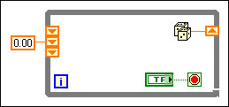

You have initialized some but not all the elements of a shift register on the block diagram. LabVIEW requires that you initialize all the elements or none of them.
To correct this error, remove all left-side shift register elements so none are initialized, or add inputs so all are initialized.